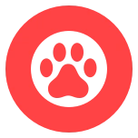
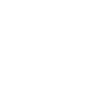
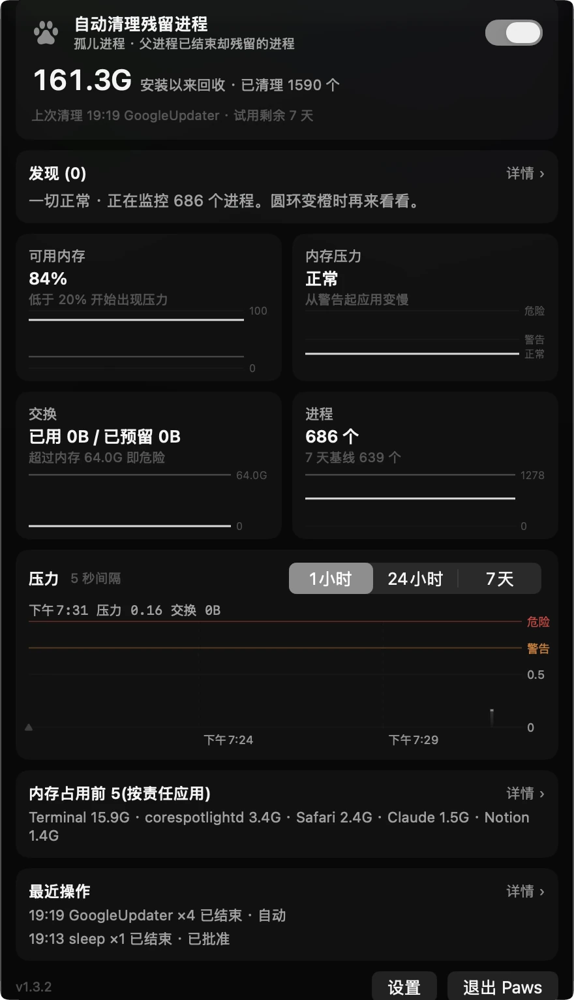
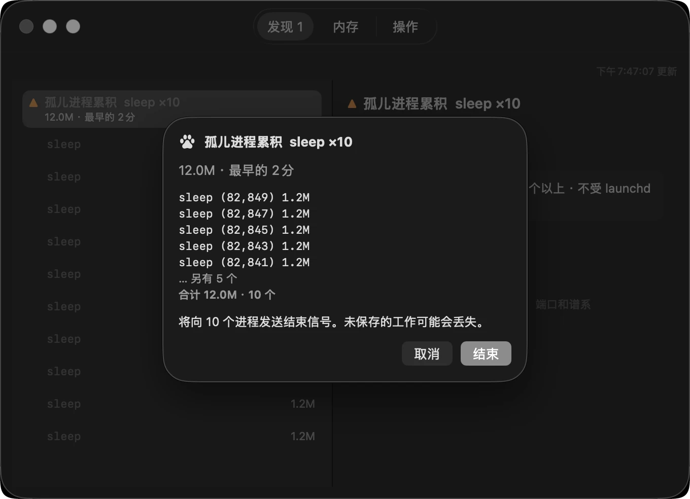
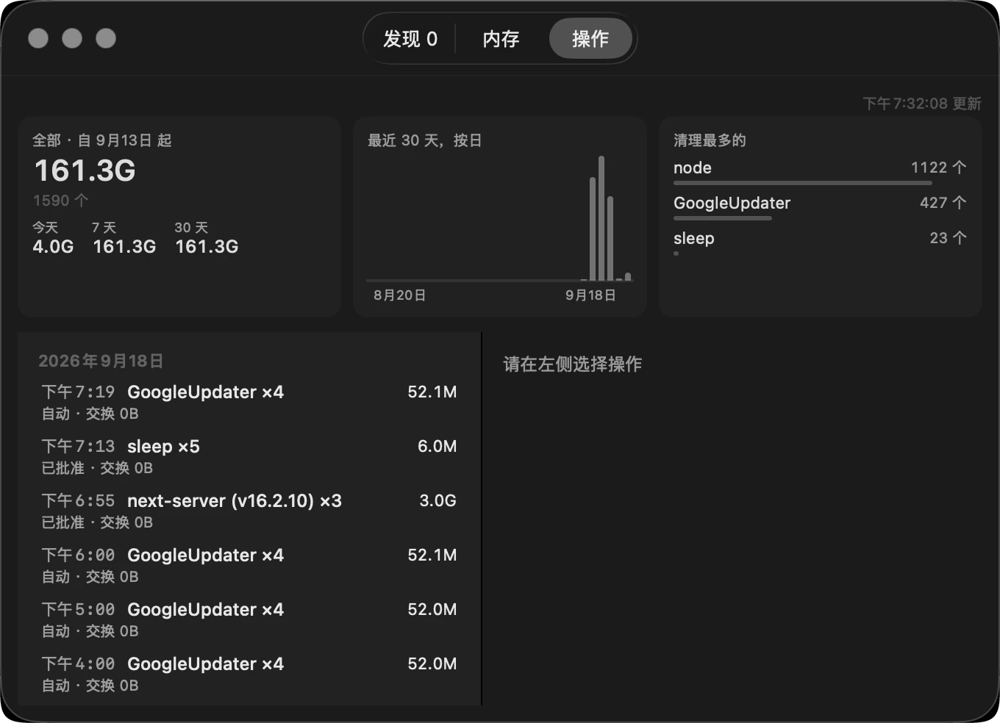

有一天，我的 Mac 上堆积了 2,750 个失去主人的进程—— 活动监视器和内存警告都没能指出它们。 Paws 只找出这些进程并清理掉。 正在工作的会话一概不碰。
Mac 变慢时，我们习惯去找最重的那个 App。但在同时跑好几个 AI 工具的 Mac 上，真凶不在列表最上面，而在列表之外。
重活早就干完了，风扇却还一直转。
没开几个窗口，滚动却发黏，切换 App 也卡顿。
弹出“应用程序内存不足”。照着提示退出了那个 App，过一会儿又弹出来。
打开活动监视器，几百行，不知道该从哪儿看起。
这四件事一起出现时，通常不是一个大 App，而是几百个小进程堆在那里。 每一个单看都没问题，所以警告窗口和活动监视器都指不出它们。
两个都是冤枉的。 照做退出了，几分钟后警告又来了。
这才是真凶。 父进程没了，被 launchd 接管，安静地堆了 55 天。
一行命令做不到。在写这段话的这台 Mac 上数一下没有父进程的进程，结果是这样：
这大约 800 个全都“没有父进程”，但其中该清理的是 0 个。 Spotify、Notion、Safari 的标签页，还有苹果几十个音频辅助进程，父进程也都是 launchd。 没有父进程不是孤儿的证据，只是信息缺失。 把真正的孤儿和正在干活的进程分开 —— 这就是 Paws 做的事。
能显示内存用了多少的工具有很多。Paws 更进一步，判断出其中哪些已经失去了主人。
父进程退出后被遗留下来的进程。只有同一命令累积到 3 个以上时才会成为候选。只有一个的话不去管它。
没有任何终端持有，却占用大量内存的进程。Paws 从不自行结束它，只会把它列出来。
菜单栏的圆环用颜色告诉你状态。平时是灰色，警告时变橙，危险时变红。图表显示它是怎么走到这一步的。
该留下什么，比该删掉什么更难判断。Paws 用四步收窄这个判断，任何一步不确定就停下。
每 5 秒读一次内存压力和交换空间，每 15 秒读一次进程列表。你能看到的只有菜单栏上的一个圆环。
不影响你的工作Paws 自己占用在 100 MB 以内，只记最近 15 分钟，其余丢掉。
它问的是“会话还握着它吗”，不是“它忙不忙”。它读内核放在终端前台的那个进程组（e_tpgid），保护会沿着父进程向上蔓延。
不影响你的工作终端握着的，以及挂在它下面的，全都保护。等待输入、CPU 为 0 的 AI 会话也一样。
只有同一条命令堆了三个以上才进候选。苹果的 XPC 服务和 App 扩展根本不进候选。
不影响你的工作只有一个的进程，可能只是在干活。不确定就不往列表里放。
它会打开记录窗口，把要结束的东西摆出来再问一次。没有任何会话持有的进程，列表打开时一个勾都没有。结束了什么、何时、为何，完整保留一年。
不影响你的工作自动清理默认关闭。就算打开，也只针对通过第 03 步的孤儿进程。
第一版把“不在 launchctl 列表里”当成孤儿的证据。按这个标准，它把 108 个正常的苹果 XPC 服务结束掉了 —— 其中还包括 Safari 的网页内容进程。
那个版本发布时，100 个合成测试全部通过。不在列表里是信息缺失，不是证据，而只用假进程测试永远看不出这一点。
现在每次构建都会在真机上跑一个测试：在一台健康的 Mac 上，自动清理的名单是不是 0 个。 判定规则从那天起增加到六条，每一条都把“不确定就什么都不做”作为默认值。
下面每一张，要么直接截自写这段话的这台 Mac，要么就是从 App 画图标的那段代码里直接输出的。没有重画，也没有把数字修饰过。
平时你能看到的只有这一个爪印。想看数字就在设置里打开。
围着它的圆环表示内存状态。
平时安静，要紧时用颜色说话。

数字关（默认）
数字开
危险
已暂停当前状态都在这一屏里，不用滚动 —— 一共拿回多少、发现了什么、可用内存和交换空间、进程数量、压力曲线、最近一次处理，以及最下面的设置和退出。
这台 Mac 装上之后拿回了 161.3 GB，
一共清理了 1,590 个进程。

点清理会打开记录窗口，把将要结束的东西列出来，再问你一次。只有你选的才会结束。
“未保存的工作可能会丢失。”
—— 结束之前它先说这句话。

结束过的全都留着记录 —— 按日期，结束了多少个什么，拿回了多少。保留一年。
清理最多的 —— node 1,122 个，
GoogleUpdater 427 个。

2026 年 9 月 18 日，在 macOS 26 · Mac Studio（M4 Max，64 GB）上用 Paws 1.3.2 截取。数字是那台机器的真实数值。菜单栏的六张图标是从 App 画图标的代码（PawGauge、MenuBarLabel）里直接输出的 —— 截屏会让壁纸透过来，图标就糊了。
清理应用最重要的不是删掉什么，而是留下什么。
挂在它下面的所有进程也都受保护。等待输入的 AI 会话同样算在内。
清理列表打开时是空的。每一个被结束的进程都是人亲自选的。
没有使用统计，也没有崩溃报告。唯一的例外是许可证验证。
结束任何进程之前都会再确认一次，并记下结束了什么、何时、为什么。判断不确定时，什么都不做。
CPU 为零不代表空闲。
等待输入的 Claude Code 占用 0 CPU。按 CPU 判断的清理工具会把它杀掉。
Paws 读取内核放在终端前台的进程组 e_tpgid。它问的是会话是否持有它，而不是它忙不忙。
安装后 14 天内全部功能开放。之后圆环、图表和发现列表仍然保留。